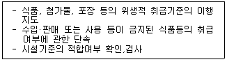
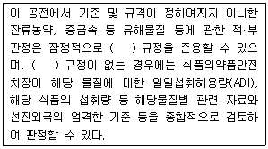
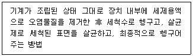
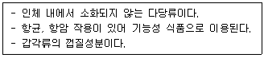
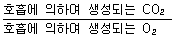
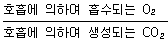

식품기사 (2014-05-25 기출문제)
1과목: 식품위생학
1. 복어의 부위별 독소의 함량이 강한 순으로 되어 있는 것은?
- 간-근육-내장
- 난소-피부-근육
- 피부-난소-근육
- 근육-피부-내장
(정답률: 84%)

2. 다음과 같은 직무를 수행하는 사람은?

- 식품위생감시원
- 식품위생관리인
- 식품위생감독원
- 식품위생심의위원
(정답률: 84%)
3. 식품첨가물인 표백제를 설명한 것 중 틀린 것은?
- 과산화수소는 환원형 표백제이다.
- 아황산염류에 의한 표백은 표백제가 잔류하는 동안에만 효과가 있다.
- 무수아황산은 과실주의 표백제이다.
- 아황산염류는 천식환자에게 민감한 반응을 나타낼 수 있다.
(정답률: 64%)
4. 가열조리된 근육식품에서 관찰되는 유해물질로서 아미노산, 크레아틴 등이 결합해서 생성되는 물질은?
- Polysyslic aromatic hydrocarbon
- Ehylcarbamate
- Heterocyclicamine
- Nitrosamine
(정답률: 59%)
5. 쥐로 인하여 매개되는 병명이 아닌 것은?
- 렙토스피라증(leptospirosis)
- 레지오넬라증(legionellosis)
- 페스트(pest)
- 발진열(typhus fever)
(정답률: 65%)
6. 빵과 생과자에 사용이 허용된 보존료는?
- dehydroacetic acid
- potassium sorbate
- sodium propionate
- benzoic acid
(정답률: 65%)
7. 유전자 재조합식품의 안전성 평가를 위한 일반적인 조사에 해당하지 않는 것은?
- 건강에 직접적 영향(독성)
- 유전자 재조합에 의해 만들어진 영양 효과
- 유전자 도입 전 식품의 안전성
- 아레르기 반응을 일으키는 경항
(정답률: 74%)
8. 방사선 조사식품의 검지방법이 아닌 것은?
- 휘발성탄화수소 측정
- 수분활성도 측정
- DNA측정
- 전자회절공명에 의항 free radical 측정
(정답률: 76%)
9. 제1군 법정감염병이 아닌 것은?(관련 규정 개정전 문제로 여기서는 기존 정답인 1번을 누르면 정답 처리됩니다. 자세한 내용은 해설을 참고하세요.)
- 디프테리아
- 세균성이질
- 콜레라
- 장티푸스
(정답률: 78%)
10. 다음 중 채소류를 매개로 하여 감염될 수 있는 가능성이 가장 낮은 기생충은?
- 동양모양선충
- 구충
- 선모충
- 편충
(정답률: 72%)
11. 아래는 식품공전의 총칙이다. ( )안에 공통으로 알맞은 것은?

- 국제식품규격위원회
- 농림축산식품해양수산위원회
- 미국식품의약품안전청
- 한국식품공업협회
(정답률: 86%)
12. 민물고기를 생식한 일이 없는데도 간흡충에 감염될 수 있는 경우는?
- 덜 익힌 돼지고기 섭취
- 민물고기를 취급한 도마를 통한 감염
- 매운탕 섭취
- 공기전파
(정답률: 91%)
13. 다음과 같은 식품 기계장치의 세정 방법은?

- 분해 세정법
- CIP 법
- HACCP 법
- Clean room 법
(정답률: 86%)
14. 식품첨가물에 대한 설명으로 틀린 것은?
- 식품첨가물의 사용은 식품의 품질, 보존성, 기호성 등을 향상시킬 수 있으나 인체의 건강에 악영향을 미칠 수도 있어 철저한 관리가 필요하다.
- 식품첨가물공전은 식품의약품안전처장이 기준 및 규격을 고시한다.
- 식품첨가물의 안전성을 확보하기 위해서는 동물독성실험을 통하여 최대무작용량(NOEL값)을 구하고 안전계수를 고려하여 일일섭취허용량을 설정한다.
- 천연첨가물이란 천연인 동물, 식물, 광물 등으로부터 유용한 성분을 추출·농축·분리·정제 등의 방법으로 얻은 물질을 말하며 색가 조정 또는 역가 조정, 품질보존 등을 위하여 희석제, 안정제 및 용제 등이 첨가된 것은 포함되지 않는다.
(정답률: 80%)
15. Salmonella 속균의 일반 성상 중 잘못된 것은?
- 아포가 없는 Gram 음성의 간균이다.
- 통성 혐기성균이다.
- 생육최적온도는 37℃, 최적 pH는 7-8이다.
- 독소형 식중독을 유발한다.
(정답률: 71%)
16. 일반적으로 식품의 초기부패 단계에서 나타나는 현상이 아닌 것은?
- 보통 불쾌한 냄새를 발생하기 시작한다.
- 퇴색, 변색, 광택 소실을 볼 수 있다.
- 액체의 경우 침전, 발포, 응고를 볼 수 있다.
- 단백질분해가 시작되지만 총균수는 감소한다.
(정답률: 88%)
17. 식중독균이 오염된 식품에서 식중독균을 분리하려고 할 때 식중독균과 분리배지가 바르게 연결된 것은?
- 황색포도상구균 - 난황함유 Mackonkey 한천배지
- 클로스트리디움 퍼프린젠스 - 난황함유 TSC 한천배지
- 살모넬라균 - TCBS 한천배지
- 리스테리아균 - Deoxycholate 한천배지
(정답률: 52%)
18. 생성량이 비교적 많고 반감기가 길어 식품에 특히 문제가 되는 핵종만으로 된 것은?
- 131I, 137Cs
- 131I, 32P
- 129Te, 90Sr
- 137Cs, 90Sr
(정답률: 79%)
19. 대장균군에 대한 최확수법의 설명으로 틀린 것은?
- 최확수란 이론적으로 가장 가능한 수치를 말한다.
- 대장균군수는 희석한 시료를 유당배지 발효관에 접종하여 실험한다.
- 유당배지 발효관 중 가스생성 여부에 따라 확률적인 대장균의 수치를 산출하고 최확수로 나타낸다.
- 실험결과, 최확수표에서 직접 구하는 대장균군수는 시료 1mL에 대한 것이다.
(정답률: 80%)
20. 곰팡이독증(mycotoxicosis)의 특징을 올바르게 설명한 것은?
- 단백질이 풍부한 축산물을 섭취하면 일어날 수 있다.
- 원인식품에서 곰팡이의 오염증거 또는 흔적이 인정된다.
- 항생물질이나 약제요법을 실시하면 치료의 효과가 있다.
- 감염형이기 때문에 사람과 사람 사이에서 직접 감염된다.
(정답률: 80%)
2과목: 식품화학
21. 식이섬유에 대한 설명으로 틀린 것은?
- 식이섬유에는 리그닌(lignin), 셀룰로오스(cellulose), 펙틴(pectin), 헤미셀룰로오스(hemicellulose) 등이 포함된다.
- 사람의 소화효소로는 소화되지 않고 몸 밖으로 배출되는 고분자 탄수화물이다.
- 정장작용을 도와 변비를 예방하고 대변의 배설을 돕는다.
- 수용성 섬유질은 혈당을 상승시킨다.
(정답률: 81%)
22. KOH를 첨가하였을 때 글리세롤을 형성하지 못하는 지방질은?
- 인지질
- 중성지질
- 트리팔미틴
- 라이코펜
(정답률: 69%)
23. 다음 당류 중 이눌린(inulin)의 주요 구성단위는?
- 포도당 (glucose)
- 만노오스(mannose)
- 갈락토오스(galactose)
- 과당 (fructose)
(정답률: 65%)
24. 다이어트 식품소재로 사용되는 복함 다당류인 글루코만난(glucomannan)을 함유하고 있는 것은?
- 토란
- 카사바
- 곤약
- 돼지감자
(정답률: 79%)
25. 죽순, 토란, 우엉의 아린 맛 성분은?
- 글루코만난 (glucomannan)
- 글루타민 (glutamine)
- 시니그린(sinigrin)
- 호모겐티스산 (homogentisic acid)
(정답률: 62%)
26. 식품등의 표시기준에 의거하여 영양성분이 “단백질 10g, 유기산 5g, 식이섬유 5g, 지방3g”으로 표시된 식품의 열량은 얼마인가?
- 67kcal
- 77kcal
- 82kcal
- 92kcal
(정답률: 59%)
27. 일정한 전단속도일 때 시간이 경과함에 따라 외관상 점도가 증가하는 유체는?
- dilatant 유체
- pseudoplastic유체
- thixotropic 유체
- rheopectic 유체
(정답률: 60%)
28. 유화식품에 대한 설명이 적절하지 않은 것은?
- 수중유적형 유화식품의 대표적인 예는 우유이고 유중슈적형 식품은 버터이다.
- 유화능을 갖는 유화제는 양친매성을 갖으며 분자내 친수성과 소수성기를 동시에 갖는다.
- 유화제는 기름과 물 사이의 표면장력을 증가시켜 물과 기름이 서로 섞이게 한다.
- 유화제의 HLB 값이 4-6이면 유중수적형 유화액을, HLB 값이 8-18이면 수중유적형 유화액 제조에 적합하다.
(정답률: 78%)
29. 다음 중 단맛이 가장 약한 것은?
- 설탕 (sucrose)
- 과당 (fructose)
- 유당 (lactose)
- 포도당 (glucose)
(정답률: 82%)
30. 식품의 관능평가의 측정요소 중 반응척도가 갖추어야 할 요건이 아닌 것은?
- 의미전달이 명확해야 한다.
- 단순해야 한다.
- 차이를 감지할 수 없어야 한다.
- 관련성이 있어야 한다.
(정답률: 89%)
31. 밀가루의 이화학적 특성으로 옳은 것은?
- 밀가루의 단백질은 글루타민이다.
- 라이신(lysine), 메티오닌(methionine) 등의 필수아미노산이 부족하다.
- 표백제의 사용으로 카로티노이드 계통의 색소가 제거되면 안토시아닌계 색소만 남는다.
- 박력분은 단백질의 함량이 12% 이상이다.
(정답률: 69%)
32. 설탕을 invertase로 처리할 때 일어나는 변화는?
- 용해도가 감소한다.
- 결정이 생성된다.
- 감미가 낮아진다.
- 전화당이 발생한다.
(정답률: 76%)
33. 카로틴류(carotenes)에 대한 다음 설명 중 틀린 것은?
- 분자내의 이중결합이 주로 공액형이다.
- 산화에 대해서는 매우 불안정하나 산, 알칼리에 대해서는 상대적으로 안정하다.
- 분자중의 모든 이중결합은 시스형(cis)이다.
- 산화에 의해서 쉽게 색이 변한다.
(정답률: 58%)
34. 고구마를 가공할 때 변색을 방지하기 위한 처리가 아닌 것은?
- 식염수 처리
- 통풍 처리
- 아황산 처리
- 열탕 처리
(정답률: 75%)
35. 난류의 특성에 대한 설명으로 옳은 것은?
- 흰자에는 lysozyme이 들어있어 항균력을 나타낸다.
- 비오틴과 결합하는 달걀단백질에는 오보뮤코이드가 있다.
- 단백질 분해효소의 저해제인 trypsin inhibitor는 열변성을 시켜 그 기능을 약화시킬 수 있다.
- 날달걀의 아비딘 성분은 열처리 후에도 거의 변성되지 않고 다른 성분들과 잘 결합하지 않는다.
(정답률: 46%)
36. 당근에서 카로티노이드(carotenoids)를 분석하는 방법에 대한 설명으로 틀린 것은?
- 카로티노이드는 빛에 의해 쉽게 분해되므로 암소에서 실험을 진행한다.
- 당근 시료에서 카로티노이드를 분리하기 위해 수용액상에서 끓여 용출시킨다.
- 카로티노이드는 산소에 의해 쉽게 산화되므로 질소가스를 공급한다.
- 분리된 카로티노이드는 보통 역상 HPLC 또는 분광광도계를 활용하여 정량한다.
(정답률: 77%)
37. 새우, 게의 갑각은 청록색이지만 조리할 때 삶거나 초절임을 하면 적색이 된다. 이 적색 색소는?
- capsoubin
- canthaxanthin
- astacin
- physalien
(정답률: 67%)
38. 동물성 단백질에 대한 설명으로 올은 것은?
- 불용성 단백질인 콜라겐은 80℃로 가열하면 가용성의 젤라틴으로 변한다.
- 액틴(actin)과 미오겐(myogen)의 결합체는 헥소키아나제(hexokinase)에 의하여 분리되면서 근육의 이완·수축이 이루어진다.
- 액틴은 구형의 F-actin과 선형의 G-actin으로 두 가지가 있으며 이들은 가역적으로 변화한다.
- 엘라스틴(elasin)은 구조상 알파 헬릭스 형태의 구조를 갖고 있어 고무와 같은 탄력으로 인대조직에 존재한다.
(정답률: 54%)
39. 유체의 점도가 높아서 식품 원료 공정 중 전단 응력이 가장 높은 값을 갖는 생산 공정은?
- 포도당 생산 공정
- 자일리톨 공정
- 잔탄검 생산 공정
- 대두유 추출 공정
(정답률: 74%)
40. 전분의 호화에 대한 설명으로 틀린 것은?
- 전분의 호화는 수분함량이 많을수록 잘 일어난다.
- 고귤전분은 감자, 고구마 전분보다 호화되기 어렵다.
- pH의 변화는 호화에 영향을 미친다.
- 전분에 염류를 넣으면 호화가 일어나지 않는다.
(정답률: 72%)
3과목: 식품가공학
41. 우유의 살균여부를 판정하는데 이용되는 적당한 방법은?
- 알콜 테스트
- 산도 측정
- 비중검사
- 포스파타아제 테스트
(정답률: 79%)
42. 아래 설명에 해당하는 성분은?

- 알긴산
- 펙틴
- 카라기난
- 키틴
(정답률: 90%)
43. D값의 설명으로 올은 것은?
- 주어진 미생물을 일정온도에서 100% 사멸시키는데 요하는 가열시간이다.
- 주어진 미생물을 일정온도에서 90% 사멸시키는데 요하는 가열시간이다.
- 주어진 미생물을 일정온도에서 50% 사멸시키는데 요하는 가열시간이다.
- 주어진 미생물을 일정온도에서 10% 사멸시키는데 요하는 가열시간이다.
(정답률: 84%)
44. 소시지, 햄 등의 가공품이 가열 처리 후에도 갈색으로 변하지 않는데 주된 이유는?
- 축산 가공품 제조 시 사용되는 인산염의 작용에 의해 nitrosometmyoglobin으로 전환되기 때문이다.
- myoglobin 등의 성분이 아질산염 또는 질산염과 반응하여 nitrosomyoglobin으로 전환되기 때문이다.
- 훈연과정 중에 훈연성분과 반응하여 선홍색이 생성되기 때문이다.
- 근육성분인 myoglobin이 가열과정 중에 변색하여 melanoidin 색소를 만들기 때문이다.
(정답률: 83%)
45. 토마토의 solid pack 가공 시 칼슘염을 첨가하는 주된 이유는?
- 가열에 의한 과실의 과육붕괴를 방지하기 위하여
- 가열에 의한 과실 색깔의 퇴색을 방지하기 위하여
- 가열에 의한 무기질의 손실을 방지하기 위하여
- 가열에 의한 향기성분의 손실을 방지하기 위하여
(정답률: 73%)
46. 다음 중 수산발효식품이 아닌 것은?
- 젓갈
- 어간장
- 수리미(surimi)
- 가자미식해
(정답률: 83%)
47. 콩으로부터 단백질이 고농도로 농축된 분리대두단백(soyprotein isolate)을 분리하기 위한 일반적인 제조 공정이 아닌 것은?
- 탈지 공정
- 가수분해 공정
- 불용성 고형분 분리공정
- 단백질 응고 및 원심 분리공정
(정답률: 66%)
48. 환경기체조절포당(MAP: modified atmosphere packaging)과 관련하여 가장 거리가 먼 것은?
- 초기 기계 장치비와 유지비가 적게 든다.
- CA 저장법의 일종이다.
- 포장재의 종류와 두께 그리??? 온도에 의하여 식품의 변질 정도가 결정된다.
- 일반적인 대상 식품인 과일의 발생기체의 양과 종류에 의하여 변질 정도가 결정된다.
(정답률: 79%)
49. 지방의 산패를 측정하는 방법이 아닌 것은?
- Kreis test
- 과산화물가측정
- VBN 측정
- TBA test
(정답률: 58%)
50. 과실 채소류의 호흡계수를 구하는 방법은?


- 호흡에 의하여 흡수된 O2량 산출
- 호흡에 의하여 방출되는 CO2량 산출
(정답률: 62%)
51. 48%의 소금(질량%)을 함유한 수용액에서 수분활성도는(Aw)? (단, NaCl 분자량 58.5이다.)
- 0.75
- 0.78
- 0.82
- 0.90
(정답률: 52%)
52. 도정 후 쌀의 도정도(盜情度)를 결정하는 방법으로 적절하지 않은 것은?
- 수분함량 변화에 의한 방법
- 색(염색법)에 의한 방법
- 생성된 쌀겨량에 의항 방법
- 도정시간과 회수에 의한 방법
(정답률: 65%)
53. 우리나라에서 맥중 맥아의 원료로 주로 사용하는 보리는?
- 2조 대맥
- 4조 대맥
- 6조 대맥
- 8조 대맥
(정답률: 58%)
54. 다음 중 같은 두께에서 투기성이 가장 적은 필름(film)은?
- polyethylene
- polypropylene
- polyvinylidene chloride
- polyvinyl chloride
(정답률: 60%)
55. 다음 중 통조림 제조 시 탈기 공정의 목적이 아닌 것은?
- 통조림 내 산소를 제거하여 통 내면의 부식과 내용물과의 변화를 적게 한다.
- 가열살균 할 때 내용물이 너무 지나치게 팽창하여 통이 터지는 것을 방지한다.
- 유리산소의 양을 적게 하여 혐기성 세균의 발육을 억제한다.
- 통조림 내용물의 색깔, 향기 및 맛 등의 변화를 방지한다.
(정답률: 67%)
56. Butter 제조 시 가장 적절한 교동(churning)의 온도와 시간은?
- 10~15℃, 50분
- 15~20℃, 40분
- 25~30℃, 30분
- 30~35℃, 20분
(정답률: 58%)
57. 유지의 윈터링(wintering) 또는 윈터리제이션(winterization)의 설명으로 틀린 것은?
- 유지가 저온에서 굳어져 혼탁해지는 것을 방지한다.
- 바삭바삭한 성질을 부여하는 공정이다.
- 고체지방을 석출·분리한다.
- 유지의 내한성을 높인다.
(정답률: 75%)
58. 액란 건조 시 품질 증진을 위하여 행하는 공정은?
- 탈당
- 냉장
- 냉동
- 살균
(정답률: 65%)
59. 다음 중 온탕법에 의한 감의 탈삽법에서 유지해야 할 가장 알맞은 수온은?
- 10℃
- 40℃
- 80℃
- 100℃
(정답률: 63%)
60. 방사선조사 시 1kg의 식품에 1J의 에너지를 흡수하는 경우의 선량을 나타내는 단위는?
- 1kGy
- 1 krad
- 1rad
- 1 Gy
(정답률: 65%)
4과목: 식품미생물학
61. 홍조류(red algae)에 속하는 것은?
- 미역
- 다시마
- 김
- 클로렐라
(정답률: 82%)
62. 재조함 DNA 기술 중 형질도입(transduction)이란?
- 세포를 원형질체(protoplast)로 만들어 DNA를 재조합 시키는 방법
- 성선모(sex pili)를 통한 염색체의 이동에 의한 DNA 재조합
- 파아지(phage)의 중개에 의하여 유전형질이 전달되어 일어나는 DNA 재조합
- 공여세포로부터 유리된 DNA가 직접 수용세포 내에 들어가서 일어나는 DNA 재조합
(정답률: 65%)
63. 독버섯의 유독성분에 대한 설명으로 틀린 것은?
- Muscaridine : 위경련, 구토, 설사증상을 나타낸다.
- Neurine : LD50 90mg/kg 독성으로 호흡곤란, 경련, 마비증상을 보인다.
- Muscarine : 3~5mg의 피하주사나 0.5,g 경구투여 할 경우 사망한다.
- Phaline : 용혈작용이 있다.
(정답률: 54%)
64. 김치 숙성에 관련된 균이 아닌 것은?
- Leuconostoc mesenteroides
- Pediococcus cerevisiae
- Lactobacillus plantarum
- Bacillus subtilis
(정답률: 73%)
65. 하면발효효모에 대한 설명 중 틀린 것은?
- 난형 또는 타원형이다.
- 발효작용이 상면발효효모보다 빠르다.
- 라피노오스(raffinose)를 발표시킬 수 있다.
- 발표 최적온도는 5~10℃정도이다.
(정답률: 75%)
66. 세균의 Gram 염색에 사용되지 않는 것은?
- Crystal violet 액
- Lugol 액
- Safranine 액
- Methylene blue 액
(정답률: 71%)
67. 그램(gram) 양성 및 음성균의 세포벽 성분 함량에 관한 다음 설명 중 맞는 것은?
- 양성균은 chitin 과 단백질이 많고, 음성균은 glucan,teichoic acid 가 많다.
- 양성균은 chitosan 과 지방이 많고, 음성균은 peptidoglycan 과 teichoic acid 가 많다.
- 양성균은 mucopeptide, teichoid acid 가 많고, 음성균은 지질, lipiprotein 이 많다.
- 양성균은 mucopeptide 와 지질이 많고, 음성균은 lipoproteinm teichoic acid 가 많다.
(정답률: 67%)
68. Saccharomyces cerevisiae 를 12시간 배양한 결과, 균수가 2에서 128로 증가할 때 세대수와 평균 세대 시간은?
- 세대수 = 64, 평균 세대시간 = 20분
- 세대수 = 7, 평균 세대시간 = 2시간
- 세대수 = 6, 평균 세대시간 = 2시간
- 세대수 = 5, 평균 세대시간 = 3시간
(정답률: 66%)
69. 돌연변이원에 대한 설명 중 틀린 것은?
- 아질산은 아미노기가 있는 염기에 작용하여 아미노기를 이탈시킨다.
- NTG(N-Methyl-N'-nitro-nitrosoguanidine)는 DNA 중의 구아닌(guanine) 잔기를 메틸(methyl)화 한다.
- 알킬(alkyl)화제는 특히 구아닌(guanine)의 7위치를 알킬(alkyl)화 한다.
- 5-Bromouracil(5-BU)은 보통 엔올(enol)형으로 아데닌(adenine)과 짝이 되나 드물게 케토(keto)형으로 되어 구아닌(guanine)과 짝을 이루게 된다.
(정답률: 65%)
70. 유전자의 프로모터(promoter)의 조절 부위 혹은 조절 단백질의 활성에 변이가 생겼을 때 일어나는 돌연변이체는?
- 영양요구 돌연변이체(auxotrophic mutant)
- 조절 돌연변이체(regulatory mutant)
- 대사 돌연변이체(metabolic mutant)
- 내성 돌연변이체(resistant mutant)
(정답률: 74%)
71. 포도주 제조에 쓰이는 것은?
- Saccharomyses sake
- Saccharomyses formosensis
- Saccharomyses ellipsoideus
- Saccharomyses pasteurianus
(정답률: 69%)
72. 원핵세포의 특징이 아닌 것은?
- 핵양체가 있다.
- 인이 있다.
- 세포벽은 펩티도글리칸(peptodiglycan) 복합체로 구성되어 있다.
- 미토콘드리아 대신에 메소좀(mesosome)을 가지고 있다.
(정답률: 62%)
73. 우유의 pasteurization에서 지표균으로 주로 이용되는 것은?
- Mycobacterium tuberculosis
- Clostridium botulinum
- Bacillus Stearothermophilus
- Staphulococcus aureus
(정답률: 59%)
74. 효모 중 김치류의 표면에 피막을 형성하며, 질산염을 자화하지 않는 것은?
- Saccharomyces 속
- Pichia 속
- Rhodotorula 속
- Hansenula 속
(정답률: 62%)
75. 바이러스에 대한 설명으로 틀린 것은?
- 일반적으로 유전자로서 RNA나 DNA 중 한 가지 핵산을 가지고 있다.
- 숙주세포 밖에서는 증식할 수 없다.
- 일반세균과 비슷한 구조적 특징과 기능을 가지고 있다.
- 완전한 형태의 바이러스 입자를 비리온(virion)이라 한다.
(정답률: 62%)
76. 버섯에 대한 설명으로 틀린 것은?
- 진핵세포이다.
- 주름에 포자가 있다.
- 담자균은 담자포자를 외생한다.
- 대부분 자낭균류에 속한다.
(정답률: 69%)
77. EMP 경로에 대한 설명으로 틀린 것은?
- 수소전달체는 NAD 이다.
- 당대사 속도가 보통 TCA cycle보다 빠르다.
- 포도당이 6-phosphogluconic acid를 거치는 경로이다.
- ATP 생성양이 TCA cycle에서 보다 높다.
(정답률: 34%)
78. 폴리옥소트로픽 변이주(polyauxotrophic mutant)란?
- 여러 가지 무기영양 변이균주
- 두 가지 이상의 영양소 요구성 변이균주
- 여러 가지 자력 영양균
- 여러 가지 화학 영양균
(정답률: 76%)
79. 가근이 있는 곰팡이는?
- Mucor 속
- Rhizopus 속
- Aspergillus 속
- Penicillium 속
(정답률: 70%)
80. 아미노산으로부터 아민(amine)을 생성하는데 관여하는 효소는?
- amino acid decarboxylase
- amino acid oxidase
- aminotransferase
- aldolase
(정답률: 68%)
5과목: 생화학 및 발효학
81. 한 효소의 동력학적 특성을 측정하지 Vmax = 10 단위/분, Km = 10-3M 임을 알았다. 기질의 농도가 10-3M 일 때 이 효소의 초기반응 속도(Vo)의 값은? (단, 다른 모든 조건은 동일하다고 가정한다.)
- 10 단위/분
- 5 단위/분
- 3 단위/분
- 1 단위/분
(정답률: 62%)
82. 당밀 원료고 주정을 제조할 때의 발효법인 Hilodebrandt-Erb법(two-stage method)의 특징이 아닌 것은?
- 효모증식에 소모되는 당의 양을 줄인다.
- 폐액의 BOD를 저하시킨다.
- 효모의 회수비용이 절약된다.
- 주정농도가 가장 높은 술덧을 얻을 수 있다.
(정답률: 66%)
83. Acetyl-CoA로부터 만들 수 없는 것은?
- 담즙산
- 엽산
- 지방산
- 콜레스테롤
(정답률: 64%)
84. 김치에서 주로 나타나는 젖산균은?
- Lactobacillus acidophilus
- Lactobacillus plantarum
- Lactobacillus bulgaricus
- Lactobacillus casei
(정답률: 71%)
85. 아미노산에 대한 설명으로 틀린 것은?
- 아미노산은 산과 염기로 작용할 수 있다.
- 단백질의 아미노산 잔기는 L-입체이성질체이다.
- 단백질에서 아미노산의 서열은 단백질의 특성을 나타내며 일차구조라 한다.
- 모든 L-아미노산은 좌회전성이다.
(정답률: 70%)
86. prednisolone 호르몬의 생성에 관여하지 않는 미생물은?
- Arthrobacter simplex
- Bacillus pulvifaciens
- Corynebacterium spp.
- Gibberella fujikuroi
(정답률: 45%)
87. 빵효모의 균체 생산 배양관리 인자가 아닌 것은?
- 온도
- pH
- 당농도
- 혐기조건
(정답률: 73%)
88. 다음 중 조작형태에 따른 발효형식의 분류에 해당되지 않는 것은?
- 회분배양
- 액체배양
- 유가배양
- 연속배양
(정답률: 68%)
89. 발효공정의 Scale Up에 대한 설명 중 틀린 것은?
- 새로운 공정이 발견되어 Plant scale로 도입할 때 필요한 공정이다.
- 발효균주교체에 따른 발효공정을 개량할 때 필요하다.
- Scale Up의 비율은 일반적으로 10배 정도의 규모로 행한다.
- Scale Up을 검토한 후 공업적 생산용으로 Pilot Plant가 효과적이다.
(정답률: 48%)
90. 다음 중 비타민 F에 해당하지 않는 지방산은?
- arachidic acid
- arachidonic acid
- linoleic acid
- linolenic acid
(정답률: 60%)
91. 조효소로 사용되면서 산화환원반응에 관여하는 비타민으로 짝지어진 것은?
- 엽산, 비타민 B12
- 니코틴산, 엽산
- 리보플라빈, 니코틴산
- 리보플라빈, 티아민
(정답률: 56%)
92. DNA의 염기 조성에 관한 설명으로 틀린 것은?
- 서로 다른 종의 생물은 DNA의 염기 조성이 다르다.
- 같은 생물의 경우, 조직이 달라도 DNA 염기 조성은 같다
- 같은 생물의 경우, 영양상태나 환경이 달라져도 염기 조성은 같다.
- 같은 생물이라 하더라도 연령이 다르면 DNA 염기 조성이 달라진다.
(정답률: 68%)
93. 재조합 DNA에 사용되는 제한효소(restriction enzyme)인 endonuclease가 아닌 것은?
- EcoRⅠ
- Hind Ⅱ
- Hind Ⅲ
- SalP Ⅳ
(정답률: 75%)
94. 구연산(citrate)이 TCA 회로를 거쳐 옥살로아세트산(oxaloacetate)으로 되는 과정에서 일어나는 중요한 화학반응으로 묶인 것은?
- 흡열반응과 축합반응
- 가수분해와 산화환원반응
- 치환반응과 탈아미노반응
- 탈탄산반응과 탈수소반응
(정답률: 75%)
95. 유전자 발현과정에 관여하는 핵산물질이 아닌 것은?
- DNA
- t-RNA
- m-RNA
- NAD
(정답률: 75%)
96. 가장 진보된 발효법으로 규모가 큰 생산에 적합한 방법은?
- 피국법
- 액체국법
- Amylo 법
- Amylo 술밑 국 절충법
(정답률: 60%)
97. 아미노산은 등전점보다 낮은 pH에서 전하가 어떻게 변하는가?
- (+)로 대전된다.
- (-)로 대전된다.
- 절대 전하(net charge)가 0 이 된다.
- 대전되지 않는다.
(정답률: 71%)
98. 청주를 제조할 때 국균으로서 구비해야 할 성질이 아닌 것은?
- amylase 생성이 많고 강한 것
- protease가 강한 것
- 진한 색소를 생산하지 않은 것
- 균모는 길지 않고 번식이 빠른 것
(정답률: 57%)
99. 1차 대사와 생산물 생성이 별도의 시간에 일어나는 증식비관련형 발효에 해당되지 않는 것은?
- 항생물질
- 라이신
- 비타민
- 글루코아밀라아제
(정답률: 37%)
100. Nucleotide로 구성된 보효소가 아닌 것은?
- ATP
- TPP
- cAMP
- NADP
(정답률: 46%)